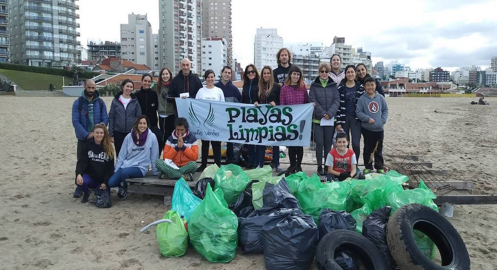
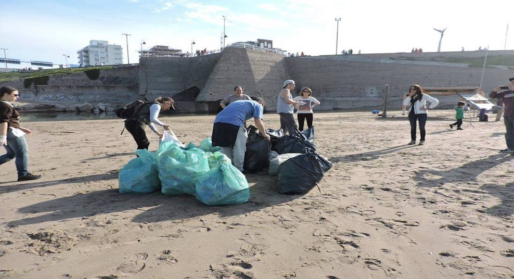

¡Un llamado a la conciencia! ¿Estas reciclando?
Reciclar conlleva ahorrar materias primas, energía, agua y reducir las emisiones de gases de efecto invernadero. Y además, genera nuevos puestos de trabajo y tejido industrial.
Sin duda, los beneficios de reciclar nuestros residuos son enormes en comparación con la acción tan sencilla y cotidiana que supone.
Acá te compartimos un poco de info...
Sabes, Dónde dejar tus bolsas de reciclaje?
"Vení a La Costa" hizo un mapa con todas las postas habilitadas ¡¡Genial!!
MAPA DE POSTAS DE RECICLAJE - SANTA TERESITA
Limpieza de Playas en La Costa Atlántica y Tips
para ser un Turista Responsable
¿Sabías que Argentina se encuentra entre los 30 países que más desechos tiran al mar?
Según el último Censo de Basura Costera Marina 2021 realizado por la Fundación Vida Silvestre Argentina y otras ONG costeras, los tipos de contaminantes más encontrados en las playas fueron colillas de cigarrillo (19,6%), fragmentos plásticos (18,7%), envoltorios plásticos (13,2%), bolsas plásticas (10%) y restos de nylon (8,1%). cantidad de basura arrojada al mar es preocupante y en el verano, a medida que aumenta la cantidad de turistas, también crece el número de residuos.
Por eso queremos compartirte algunas iniciativas que se están desarrollando de limpieza de playas en la Costa Atlántica y tips para ser un turista responsable.
La ONG Ángeles Verdes durante todo el año organiza recolecciones grupales, en especial de colillas de cigarrillos. Genera limpiezas de playas desde 2017 en la Costa Atlántica. En sus redes van comunicando los días de limpieza y todas sus campañas a favor del medio ambiente.
La Federación de Cartoneros, Carreros y Recicladores (UTEP) lanzó en el Partido de la Costa el programa Playas Limpias. Muchas promotoras ambientales trabajan para concientizar sobre la importancia de hacer separación de residuos en las vacaciones.
Estos equipos fueron formados por la Federación de Cartoneros para dar apoyo a las cooperativas de recicladores que ya existen en cada localidad balnearia, para que así puedan aumentar los volúmenes de acopio de botellas, latitas, vidrios y cajas de cartón, que no deberían quedar en la playa ni ser desechados con la basura común.
La iniciativa busca: Generar conciencia en los turistas, educar sobre la separación en origen de los residuos y evitar la contaminación de mares y océanos, promoviendo una gestión social del reciclado en manos de cartoneros y cartoneras.
Tips para un turista responsable en la playa 
La Fundación Vida Silvestre propone las siguientes recomendaciones:
- Tener siempre con vos una bolsa reutilizable para evitar usar bolsas plásticas.
Los plásticos blandos que llegan al mar son los responsables de la muerte de muchas tortugas y delfines franciscanas, entre otros animales marinos. - Si fumás, no dejes las colillas en la arena.
Las colillas son contaminantes muy peligrosos que asfixian los fondos marinos y además pueden ser consumidos por muchos animales.
Cada colilla puede contaminar entre 8 y 10 litros de agua del mar y hasta 50 litros de agua dulce. - Llevar tu propia botella recargable para el agua y disminuir el uso de plásticos.
El 33% del plástico que se produce a nivel mundial corresponde a plásticos de un solo uso.
Evitá además los sorbetes y los cubiertos descartables. - Guardar tu comida en contenedores que puedas re utilizar.
- La fauna silvestre también forma parte de la playa.
Si encontrás un animal, no lo molestes: está en su ambiente natural.